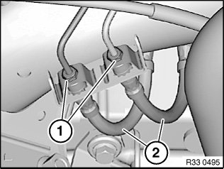
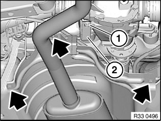
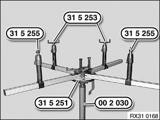
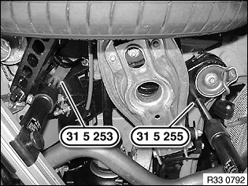
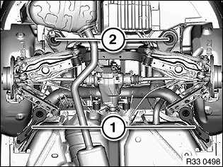

33 31 503 Lowering/Raising Rear Axle Carrier (Universal Lifter)
33 31 503 Lowering/raising rear axle carrier (universal lifter)Special tools required:
Warning!
Risk of injury!
Failure to comply with the following instructions may result in the vehicle slipping off the lifting platform and critically injuring other persons.
Read and observe the information on load distribution in the Owner's
Handbook, lifting platform.
Before lowering/removing the rear axle support, it is essential to place a minimum load of 100 kg in the luggage compartment to prevent the vehicle from toppling/slipping off the lifting platform!
When supporting components, make sure that
^ the vehicle can no longer be raised or lowered
^ the vehicle does not lift off the locating plates on the lifting platform
Necessary preliminary tasks:
^ Remove both rear coil springs
^ If necessary, remove trailing link

Press clutch pedal down to floor and secure with pedal support.
Note:
The pedal support may only be released when the brake lines are reconnected.
This prevents brake fluid from emerging from the expansion tank and air from entering the system when the brake lines are opened.

Position an oil sump underneath to catch brake fluid.
Release banjo bolts (1), gripping brake hoses (2) at square head in the process.
Disconnect brake hoses (2) and seal off with plugs.
Installation:
Make sure brake hoses are laid without tension and with sufficient spacing to adjoining components.
Tightening torque 34 32 1AZ.
Unclip cables for pulse generator and ride height sensor/brake pad sensor on rear axle carrier at side.

Slacken nut (1).
Turn bracket (2) for exhaust system towards rear.
Release sheet nut and bolts (arrows).
Place heat shield on exhaust system.

31 5 251 Engage with a 2nd person helping completely on workshop jack 00 2 030.
Insert special tools 31 5 255 in telescopic supports of a profile rail pair.
Note:
In a profile rail pair two profile rails are connected to each by toothing.
Insert special tools 31 5 253 in telescopic supports of other profile rail pair.

Note:
The jacking points on the left side are shown.
Align special tools 31 5 253 and 31 5 255 to rear axle support.
Support front axle support by operating workshop jack 00 2 030.

Remove compression struts (1).
Release screws (2) and swivel/remove stop plates to one side.
Lower rear axle carrier.
Installation:
Check threads for damage; if necessary, repair with Helicoil thread inserts.
First install compression struts (1) and then tighten down screws (2).
Tightening torque 33 33 1AZ.
After installation:
^ Bleed braking system